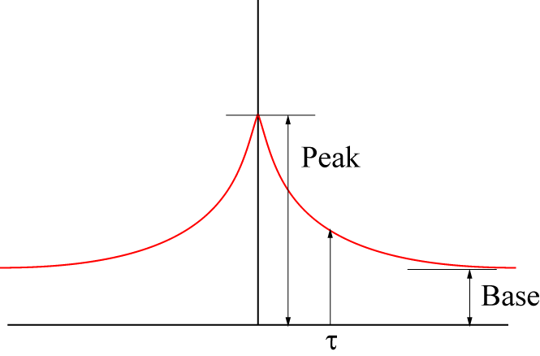

ランダム過程における自己相関関数について-02
自己相関，a=1, d=0の場合
ここで，０，１の場合を考えます．
これは，アクトミオシンの力学過程やイオンチャネルの開閉などの場合です．つまり，
自己相関関数，，<f(t)f(t+τ)>，は f(t)がA状態，かつ，f(t+τ)がA状態 のみに値を持ちます
つまり，全ページの式において，初期条件，t=0, A=1，となります．
\(\Large \frac{dA[t]}{dt} = \frac{P_0}{\tau} - \frac{1}{\tau} A \)
の微分方程式を解けばよいのです．
ここでは，定数項を０として扱い，その後に計算で出てきた比例定数を変数として扱う方法で解いてみましょう．
定数項を０として，
\(\Large \frac{dA[t]}{dt} = - \frac{1}{\tau} \)
\(\Large A[t] = A_0 \cdot exp \left( - \frac{t}{ \tau} \right) \)
比例定数，A0，を変数として計算すると，
\(\Large \frac{dA[t]}{dt} = A_0' \cdot exp \left( - \frac{t}{ \tau} \right) -\frac{A_0}{ \tau} \cdot exp \left( - \frac{t}{ \tau} \right) = \frac{P_0}{\tau} - \frac{1}{\tau} A[t] \)
\(\Large A_0' \cdot exp \left( - \frac{t}{ \tau} \right) = \frac{P_0}{\tau} \)
\(\Large A_0' = \frac{P_0}{\tau} \cdot exp \left( \frac{t}{ \tau} \right) \)
\(\Large A_0 = P_0 \cdot exp \left( \frac{t}{ \tau} \right) + D \)
\(\Large A = \left[ P_0 \cdot exp \left( \frac{t}{ \tau} \right) + D \right] \cdot exp \left( - \frac{t}{ \tau} \right) \)
\(\Large \begin{eqnarray} A &=& \left[ P_0 \cdot exp \left( \frac{t}{ \tau} \right) + D \right] \cdot exp \left( - \frac{t}{ \tau} \right) \\
&=& P_0 + D \cdot exp \left( - \frac{t}{ \tau} \right) \\
\end{eqnarray} \)
t=0, A=1から，
\(\Large 1 = P_0 + D \)
\(\Large D = 1 - P_0 \)
\(\Large A = P_0 + ( 1- P_0) \cdot exp \left( \frac{t}{ \tau} \right) \)
となる．
f(t)がA状態 ： P0
f(t+τ)がA状態 ：上記式 なので，
\(\Large \begin{eqnarray}
<f(t) f(t+ \tau)>
&=& P_0 \left[ P_0 + ( 1- P_0) \cdot exp \left( - \frac{t}{ \tau} \right) \right] \\
&=& P_0^2 + P_0 \cdot ( 1- P_0) \cdot exp \left( - \frac{t}{ \tau} \right) \\
\end{eqnarray} \)
となります．つまり，

\(\Large Peak : \hspace{ 18pt } P_0^2 + P_0 \cdot ( 1- P_0) = P_0 \)
\(\Large Base : \hspace{ 18pt } P_0^2 \)
\(\Large \tau : \hspace{ 18pt } \frac{1}{k_{+} + k_{-}} \)
のような単調な指数関数の減少となります．
もし，
k+ = 3 k-
の場合，P0 = 0.75，となります．
\(\Large \tau = 4 \cdot k_- = \frac{4}{3} \cdot k_+ \)
\(\Large t=0 \hspace{ 18pt } <f(t) f(t+ \tau)>=0.75 \)
\(\Large t= \infty \hspace{ 18pt } <f(t) f(t+ \tau)>=0.56 \)
となります．
次ページに，A状態（値a）とD状態（値ｄ）のa, d, の値を変えて計算してみましょう．